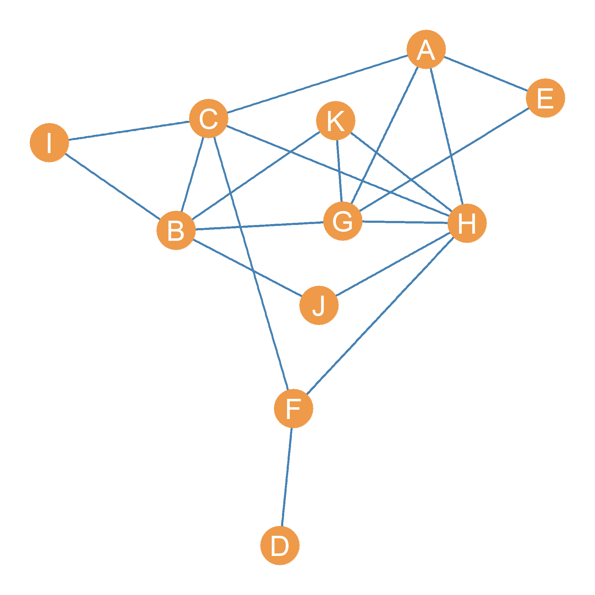
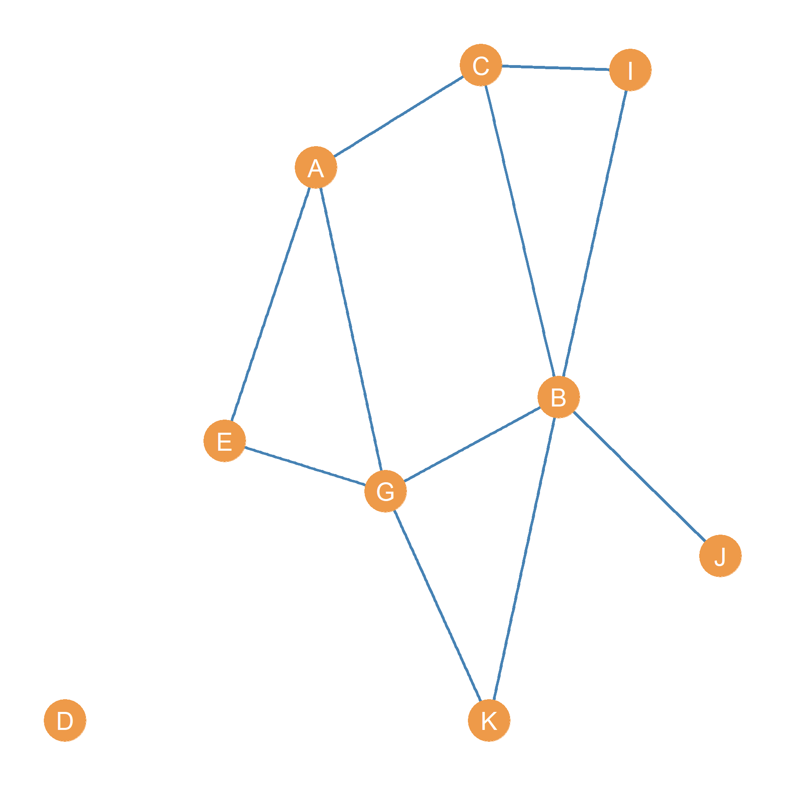

Homework I: Graph Theory
Vertex and edge sets
Consider the graph shown in Figure 1:
Write down the vertex set of the graph:
A, B, C, D, E, F, G, H, I, J, K
VA, VB, VC, VD, VE, VF, VG, VH, VI, VJ, VKWrite down the edge set of the graph:
| AC, | BC, | AE, | CF, | DF, | AG, | BG, | EG, | AH, | CH, | FH, | GH, | BI, | CI, | BJ, | HJ, | BK, | GK, | HK, |
Node Neighborhoods
Write down the neighborhood of node C
A, B, F, H, IWrite down the neighborhood of node K
B, G, HWhat is the intersection of the neighborhoods of nodes C and K?
B, HWhat is the intersection of the neighborhoods of nodes G and H?
A, KWhat is the union of the neighborhoods of nodes F and A?
C, D, H, E, G
Graph Metrics
What is the order of the graph?
11What is the size of the graph?
19Write down the graph’s degree sequence:
| H | B | C | G | A | F | K | E | I | J | D |
|---|---|---|---|---|---|---|---|---|---|---|
| 6 | 5 | 5 | 5 | 4 | 3 | 3 | 2 | 2 | 2 | 1 |
Write down the graph’s maximum Degree:
6Write down the graph’s minimum degree:
1What is the graph’s degree range?
5What is the graph’s sum of degrees?
38What is the graph’s average degree?
3.455What is the graph’s maximum size?
55Compute the density of the graph:
0.345
>
Subgraphs
- Go back to Figure 1. Draw the node-deleted subgraph of this graph that excludes nodes F, and H.

- List the isolate nodes in the node-deleted subgraph you obtained in the previous step.
D